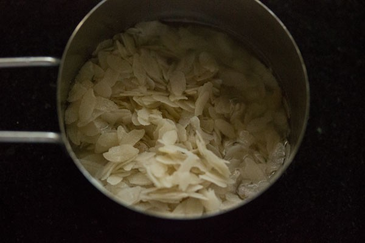

Idli
Idli is a type of savoury rice cake, originating from the Indian subcontinent, popular as breakfast foods in Southern India and in Sri Lanka. The cakes are made by steaming a batter consisting of fermented black lentils (de-husked) and rice.

Ingredients
- 2 1/2 cup basmati rice
- 1 1/2 cup urad dal
- 1/2 tablespoon fenugreek seeds
- salt as required
- 5 tablespoon sesame oil
- water as required
Method
-
Soak Rice and Lentils:
- In a bowl or pan take 1 cup parboiled rice and 1 cup regular rice. Here I have used the Indian variety of sona masuri rice along with parboiled rice
- Instead of this proportion, you can also use overall 2 cups of idli rice OR 2 cups of parboiled rice
-
Rinse in water :
- Pick and then rinse both the rice varieties a couple of times in fresh water. Drain all the water and keep it aside.
-
Working with parched rice:
- Take ¼ cup thick poha (flattened rice or parched rice) in a bowl. Poha helps in making the idli soft and fluffy. If you don’t have poha then you can skip it.
-
Rinse Poha :
- Rinse the poha once or twice with fresh water.
- 
-
Mixing poha and rice:
- Then add the poha to the rice. Add 2 cups of water. Mix very well and keep aside covered to soak for 4 to 5 hours.

-
Add Husked Black gram:
- In a separate bowl take ½ cup urad dal (husked black gram) along with ¼ teaspoon fenugreek seeds. Rinse a couple of times in fresh water.Add 1 cup water. Cover and soak for 4 to 5 hours.Before grinding, drain the water from urad dal, but don’t throw away the water. Reserve the soaked water as we will be using this water for grinding or you can use fresh water for grinding.
-
Grind or Blend Rice and Lentils :
- In a wet grinder jar, add the urad dal. Initially add ¼ cup of the reserved water or fresh water.And grind the urad dal for some seconds. Then add ¼ cup of the reserved soaked water or fresh water and continue to grind. The batter should be light and fluffy when completely ground.
- Pour the urad dal batter in a deep pan or bowl. Drain the water from the rice and poha. Add them in the wet grinder jar or in a powerful blender. I usually grind in two batches. Depending on the capacity of your mixer-grinder or blender you can grind in two to three batches. If the mixie gets heated up while grinding, then stop and let it cool. Then continue with the grinding.
-
Ferment Batter :
- Cover the bowl or container with a lid and keep the batter in a warm place. It should be left undisturbed for 8 to 9 hours. Don’t use an air-tight lid. In colder climate, keep the batter for a longer time – from 12 to 24 hours. I have mentioned various tips below for the idli batter to ferment well. So do read this section below after step by step photos.
- Pour the urad dal batter in a deep pan or bowl. Drain the water from the rice and poha. Add them in the wet grinder jar or in a powerful blender. I usually grind in two batches. Depending on the capacity of your mixer-grinder or blender you can grind in two to three batches. If the mixie gets heated up while grinding, then stop and let it cool. Then continue with the grinding.
- The batter the next morning. It will ferment and increase in volume. A well fermented idli batter will have a nice sour aroma with many tiny air pockets in the batter. As soon as the batter is fermented you can begin with steaming the idli or keep the batter in the fridge if making later. If you allow the fermented batter to remain at room temperature, it will ferment more and will become very sour with time.
-
How to Make Idli :
- Grease the idli mould with oil. Gently and lightly swirl the batter. Don’t overdo. Now with a spoon pour portions of the batter in the greased idli moulds.
- Take your idli steamer or pressure cooker or electric cooker or Instant pot. Add some 2 to 2.5 cups water and heat the water until it comes to a light boil. Keep the idli mould in the steamer or pressure cooker. Steam for 12 to 15 minutes.
- The batter the next morning. It will ferment and increase in volume. A well fermented idli batter will have a nice sour aroma with many tiny air pockets in the batter. As soon as the batter is fermented you can begin with steaming the idli or keep the batter in the fridge if making later. If you allow the fermented batter to remain at room temperature, it will ferment more and will become very sour with time.